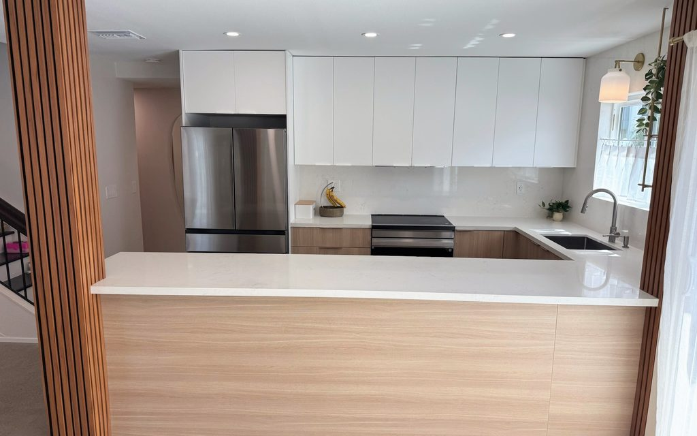
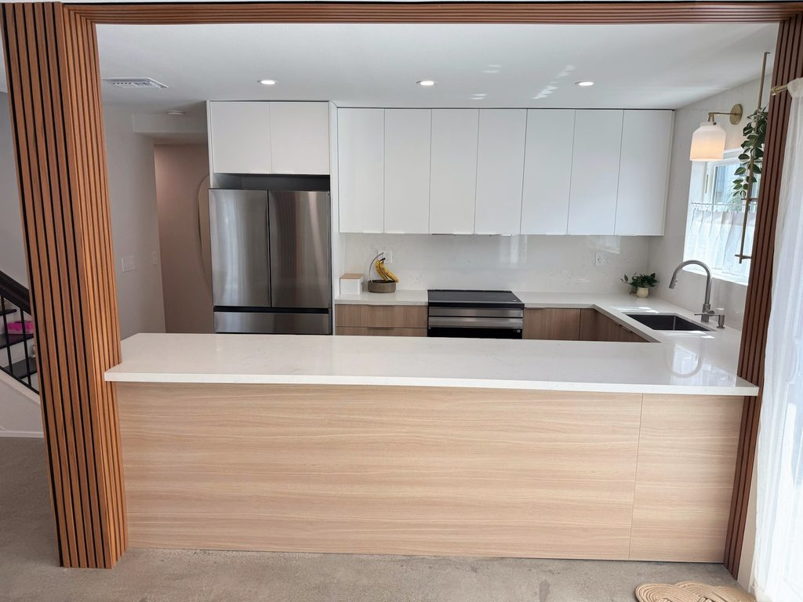

Allison McElroy Design
Timeless homes, designed for real life.
Clean, calm design with thoughtful color, practical organization and improvements made in the right order. Based in Costa Mesa, serving Orange County in person, with select services available remotely.

Philosophy
Start with what is already there.
A home does not always need to be gutted to feel new. We begin with the architecture, fixed finishes, furniture and belongings that are staying, then use color, layout, lighting, styling and organization to make the whole room make sense.
- Decorate before you renovate
- Work with existing finishes, not against them
- Choose timeless materials and colors that belong together
Selected Work
-

McElroy Kitchen
Completed 2025
-
[PHOTO: B-01] Vanity and wallpaper
Straight-on completed view of the vanity, pale blue botanical wallpaper, rounded rectangular mirror, both sconces and light-wood vanity. This is the project cover if the professional version is found. McElroy Bathroom
Completed
Professional photos to be located; updated photos to be added.
-
Concept design
Buckner Camp Kitchen
Concept design
[CONFIRM PUBLIC PERMISSION AND STATUS WORDING FOR BUCKNER CAMP]
Services
Begin with the level of help you actually need.
A finished, organized room may solve the problem. If it does not, we will know exactly what a renovation needs to accomplish.
Home Refresh: Decorating, Styling & Organizing
Orange County · In Person · Remote plan available
Color & Materials Direction
In Person / Remote
Kitchen, Bath & Renovation Design
Orange County · In Person · Remote by Project
Designed & Organized
With organizing consultant Brenda McElroy, CPO®, Organized By Choice
[SERVICE DELIVERY AND SCHEDULING DETAILS TO BE CONFIRMED WITH BRENDA]
Featured Story
Our Costa Mesa Home, in Phases
Follow a real family home as it is redesigned and redecorated one phase at a time: what stayed, what changed, how color decisions were made, and why some renovations can wait.
About
Modern by training. Timeless by conviction.
Allison began with a distinctly modern architectural sensibility. Her work has evolved toward homes that retain modern clarity while embracing classic materials, thoughtful organization and the rhythms of everyday family life.
Allison McElroy is a designer with a master’s in architecture, with professional architecture and marketing experience.
Not sure whether you need decorating, organizing or a renovation?
Start with a conversation. We will look at what you have, what is not working and which next step will make the biggest difference.